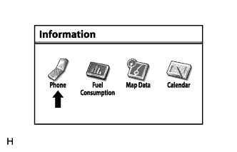
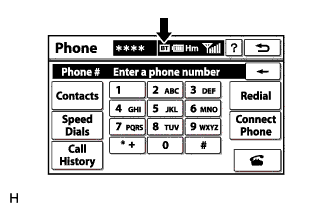

СИСТЕМА НАВИГАЦИИ (для моделей с DVD) > Невозможно сделать вызов в определенном месте |
| 1.ПРОВЕРЬТЕ ОКРУЖАЮЩИЕ УСЛОВИЯ |
Проверьте, может ли мобильный телефон делать вызовы в том месте, где возникла неисправность.
|
| ||||
| OK | |
| 2.ПРОВЕРЬТЕ ПРИЕМ |
|  |
Нажмите кнопку "INFO TEL" (информация), а затем выберите "Phone" (телефон).
|  |
Проверьте индикатор соединения через Bluetooth (метка BT).
| Результат | Действие |
| Желтый цвет | Поднесите мобильный телефон в место, где индикатор "BT" меняет цвет на голубой |
| Голубой цвет | Замените дисплей модуля системы навигации и индикации |
| Индикатор соединения не отображается | Воспользуйтесь зарегистрированным мобильным телефоном или зарегистрируйте телефон, поддерживающий технологию Bluetooth |
| ДАЛЕЕ | ||
| ||